From content to course.
How I turned a 26-page Word draft, Skin Microbiome Balancing with Probiotics, into a 13-module online course that estheticians can learn from and the client can sell.
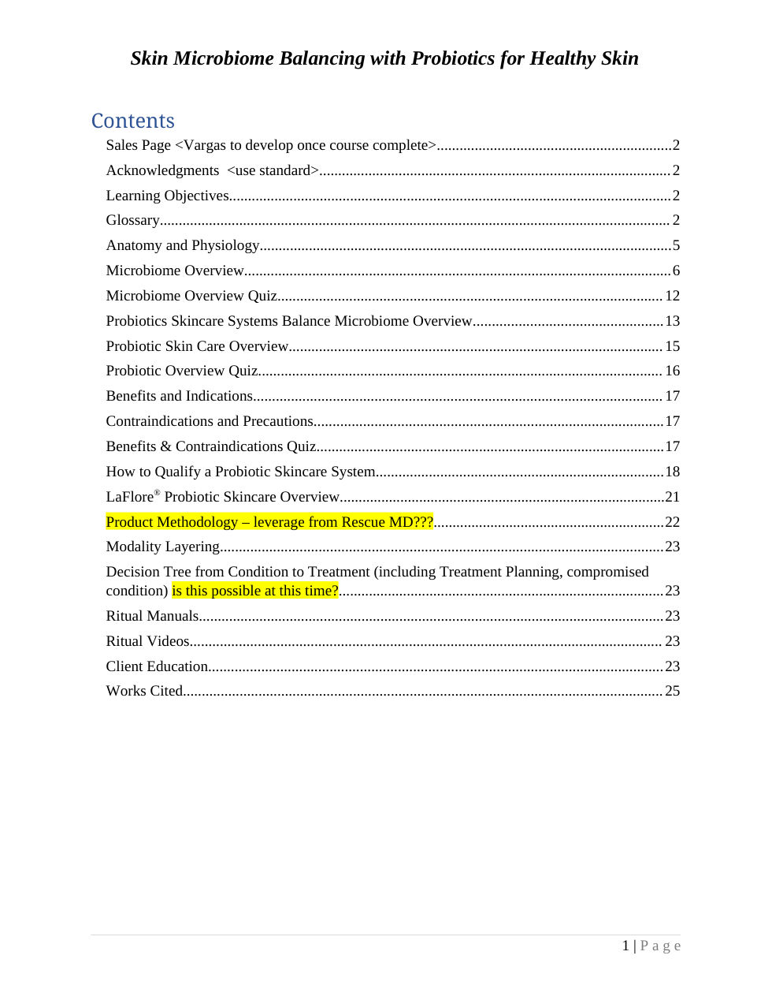
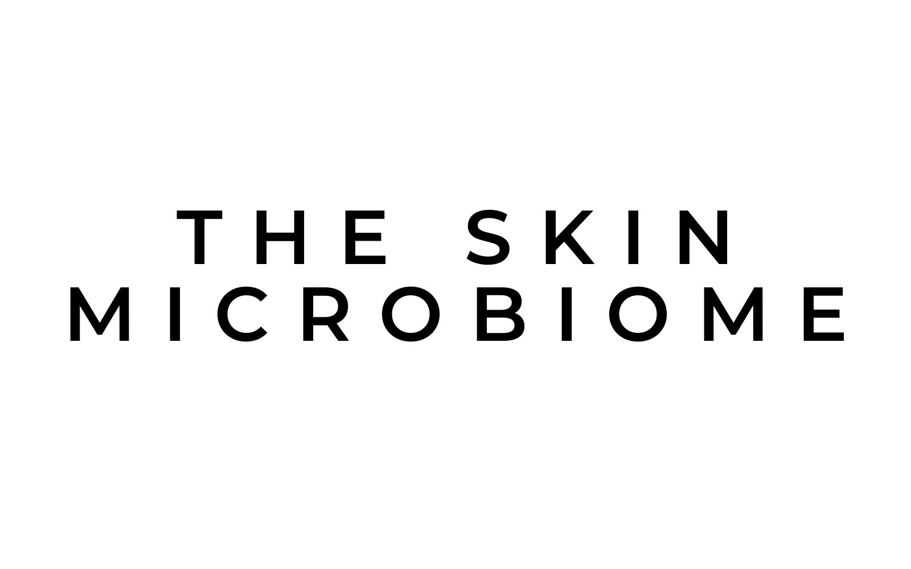
Why this course was needed
Clients are asking skin professionals about the microbiome before most of them have been trained on it. The client needed a course that turns new research into everyday treatment-room practice.
Make the science feel like self-care, not a textbook.
The skin-microbiome market is projected to reach about $1.95 billion by 2029, so demand for trained practitioners is growing. (Data Bridge Market Research, 2022)
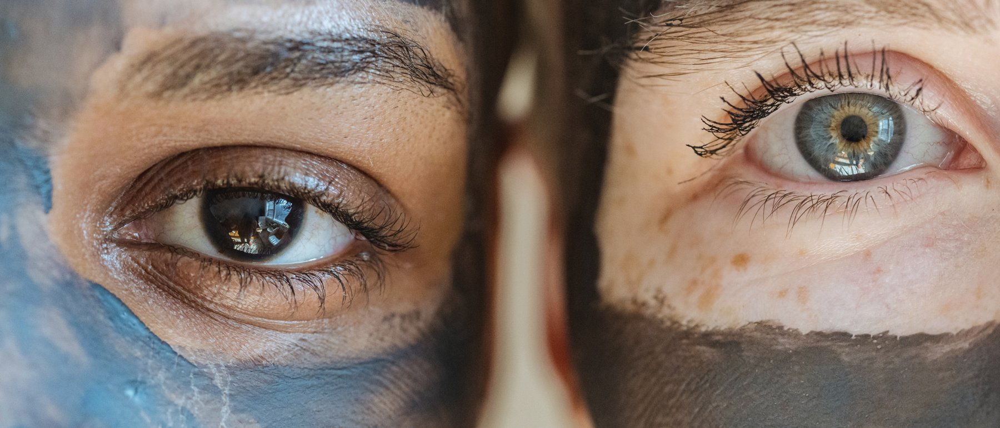
Before · the draft
- 21 headings in one long document, with no breaks or pacing
- Open questions highlighted in yellow and placeholders left in the text
- Pages of plain text with no visual hierarchy
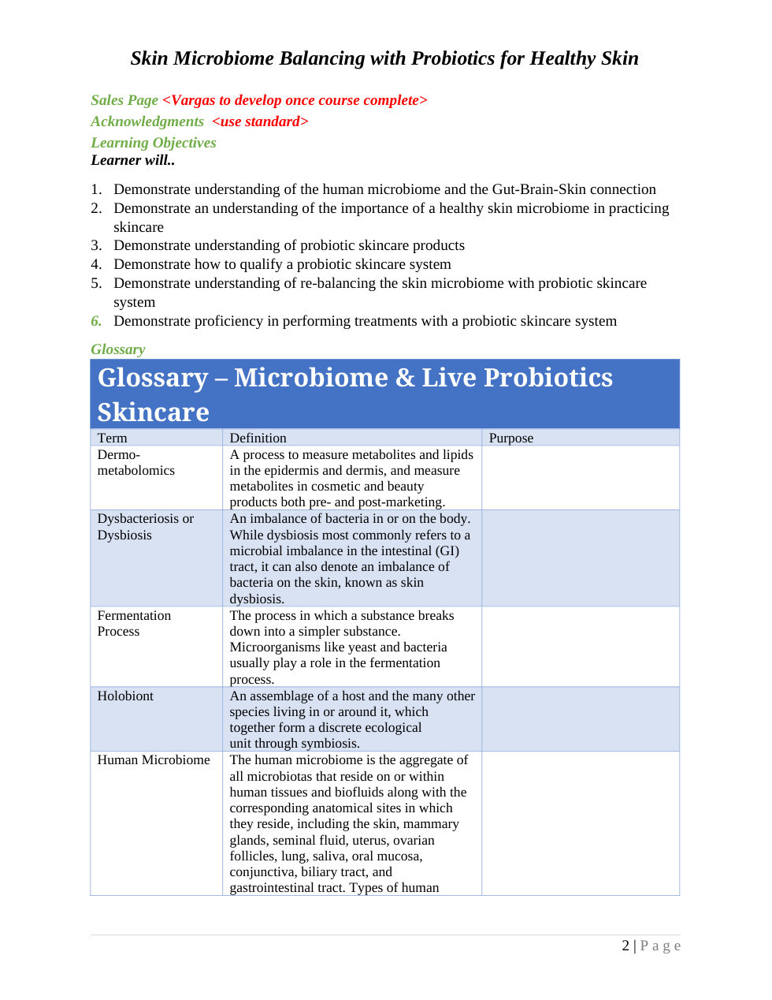
After · the course
- Short modules, each one tied to a learning objective
- Infographics, video and pull quotes for the key ideas
- A calm, consistent look that matches a spa setting
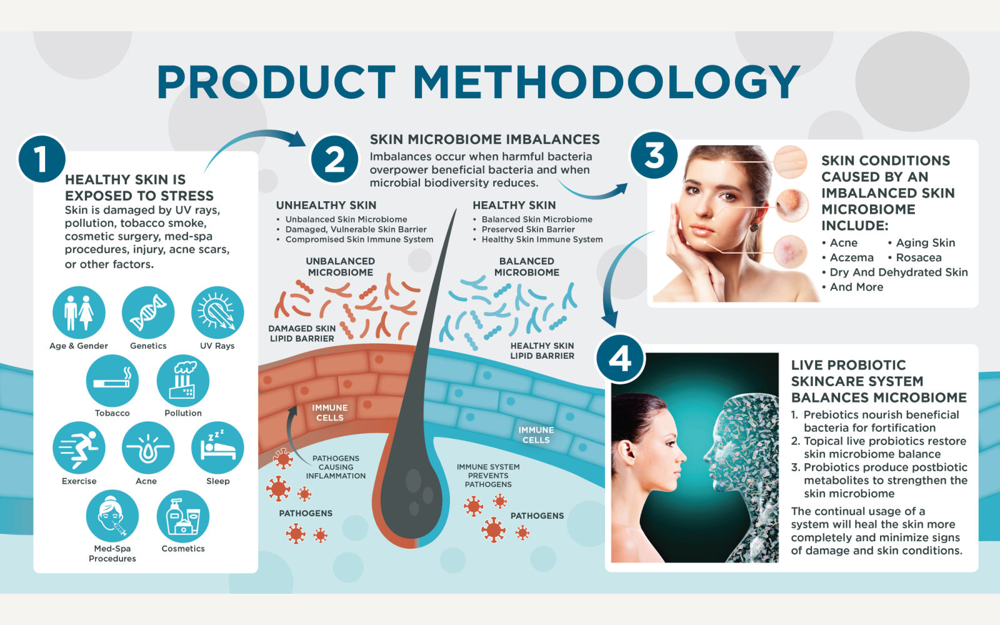
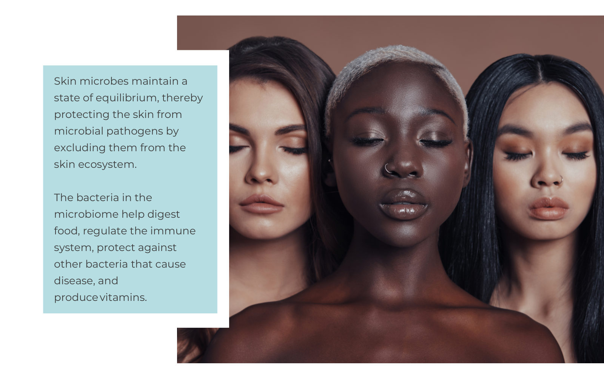
Audit the content
First I mapped what was there, what was missing and what was still undecided. I logged every note the subject-matter expert left in the draft, so each one became a design decision instead of a loose end.
"Product Methodology — leverage from Rescue MD???"
The table of contents was also a list of open questions. Notes like "is this possible at this time?" showed which sections still needed a decision from the client, so I planned the build around them.
I also cleaned up the source files: of 39 PDFs, 26 were duplicates. Only the 13 unique modules moved forward.
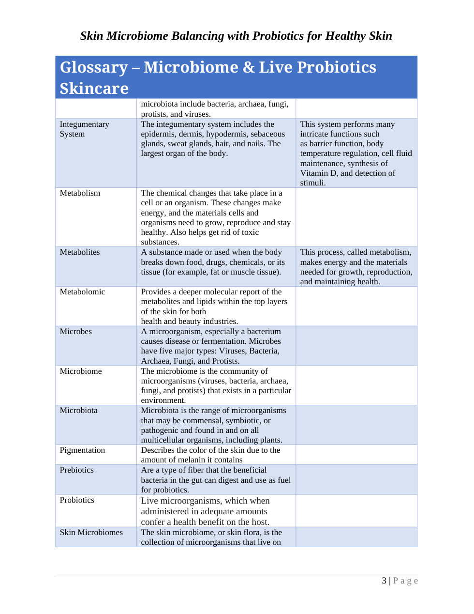
Structure the learning
I reorganized 21 headings into two tracks. Foundations builds the science; Practice applies it in the treatment room. Nothing stays in the course just because it was in the draft.
Start here
- Learning objectives
- Glossary
Track A
- The skin microbiome
- Skin microbiome roles
- Gut-brain-skin axis
- Healthy vs. unhealthy skin
- Imbalance factors
- Balancing in the treatment room
Track B
- Live probiotic skincare
- Product methodology
- Modality layering
- Client education
- Works cited
The microbiome and the gut-brain-skin connection
Why a healthy skin microbiome matters
How probiotic skincare works
Choose the right probiotic skincare system
Rebalance the skin with probiotic products
Deliver treatments with confidence
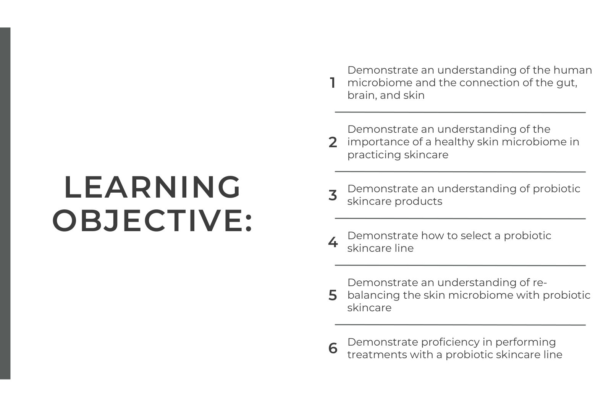
Objectives come first
The six objectives were buried in a numbered list. Now they're the course's opening screen, rewritten with consistent action verbs, so learners know where they're headed before the first lesson.
Storyboard every screen
I worked with the research, the script and the reference media side by side, so every "insert image here" note became a specific screen with a clear job.

DecisionThis idea is the heart of the module, so it gets its own full screen.
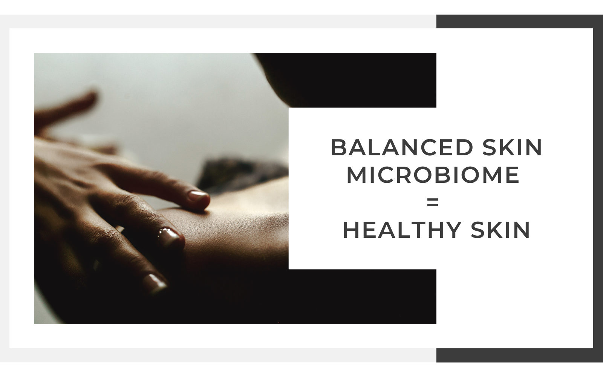
DecisionAll-caps urgency became a calm pull quote. It carries more authority without shouting.

DecisionFour lines of text became a numbered visual path that learners can follow and later explain to clients.
The finished course
13 modules and 44 screens. Choose a module to see it the way learners do.
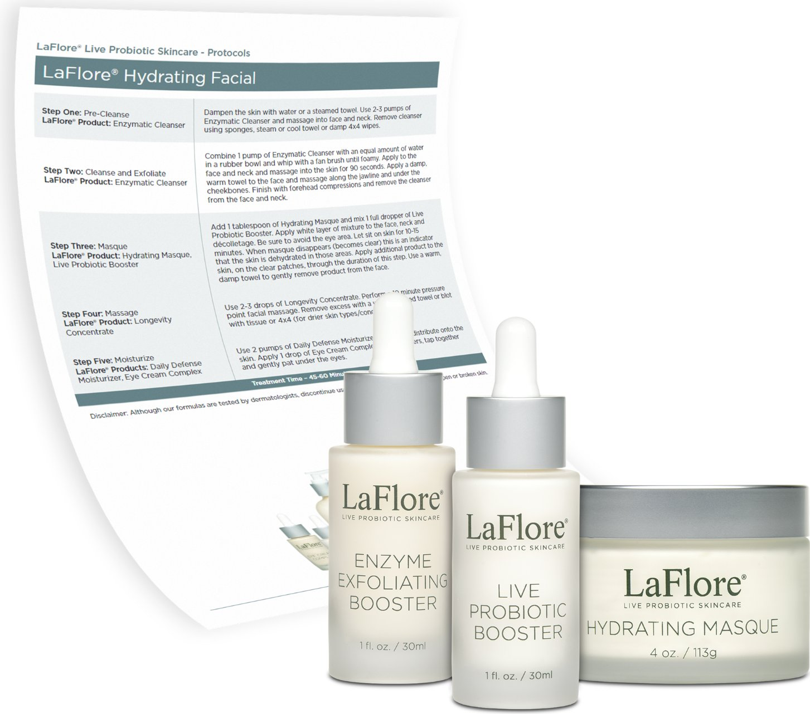
From placeholder to step-by-step treatment
The draft's "insert protocol" notes became a guided LaFlore® Hydrating Facial. Each step pairs a product with a technique.
- Pre-cleanse · Enzymatic Cleanser
- Cleanse & exfoliate
- Masque · Hydrating Masque + Probiotic Booster
- Massage · Longevity Concentrate
- Moisturize · Daily Defense + Eye Cream
Designed to feel like the spa.
The learners create calm spaces for a living, so the course uses muted colors, widely spaced headings and plenty of white space. It looks like it comes from their world.
Course palette
#3F4343
#717C7E
#B6DDE2
#FABFA1
#F5F4F0
A title screen opens every module, so learners always know where they are.
Image and text side by side make dense science easy to scan.
Video and infographics only where the content needs them.
Key ideas get a full screen, giving each module a steady rhythm.
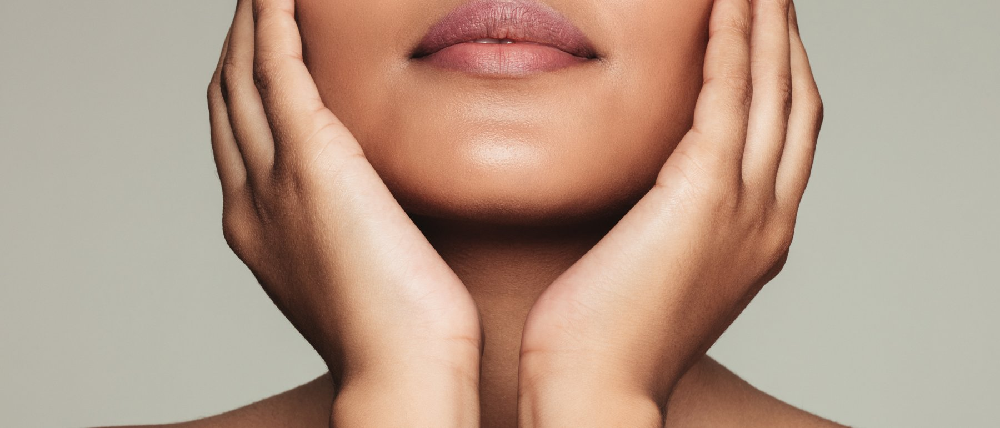
A reference document became a learning experience that teaches skin professionals to treat the health of the skin, not just its condition.
Two tracks and 13 modules, each tied to a measurable objective.
A calm look that fits the spa setting.
All 36 notes resolved and every asset in place for the LMS and sales page.